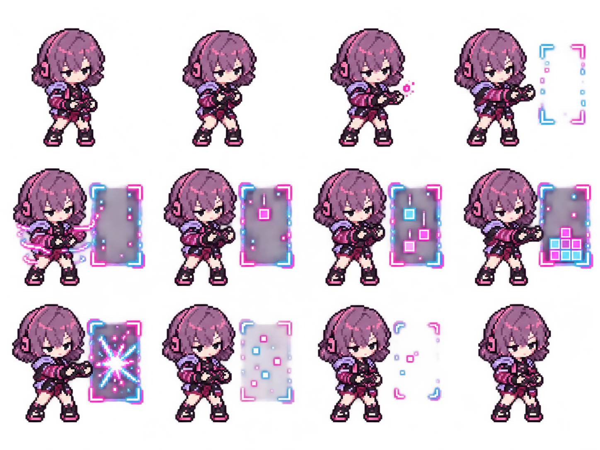

게임 적용 승인 애니메이션
니아 R · 니아의 게임월드
컨트롤러 입력으로 전방에 게임월드를 펼치고, 아케이드 블록을 쌓아 마지막 타격을 터뜨립니다. 니아의 좁은 반눈과 작은 입을 유지한 12프레임 시안입니다.
기본 재생은 8fps이며 한 사이클은 1.5초입니다. 프레임을 직접 넘기면 팔·컨트롤러·몸 자세와 블록의 변화를 확인할 수 있습니다.
전체 프레임 보기

투명 애니메이션 WebP · GIF 미리보기 · 원본 프레임 시트